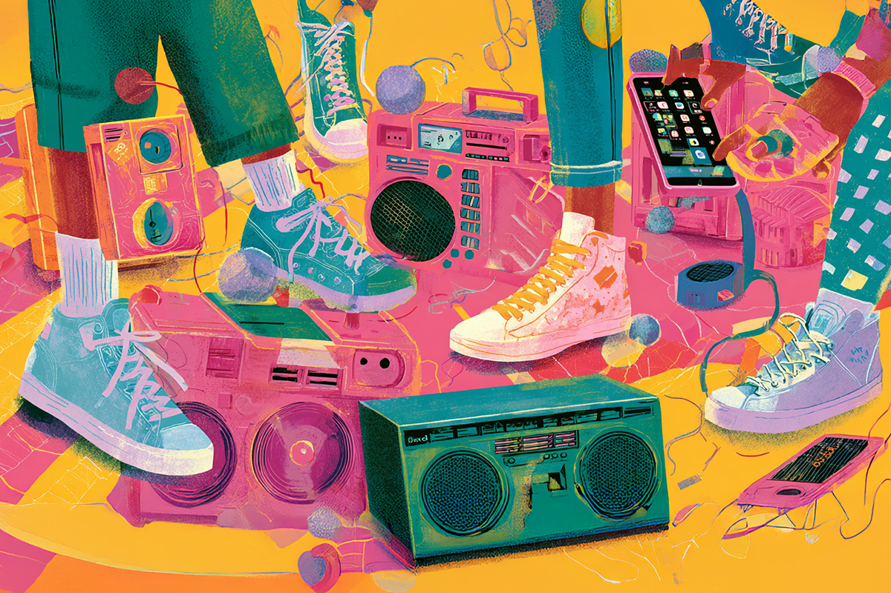
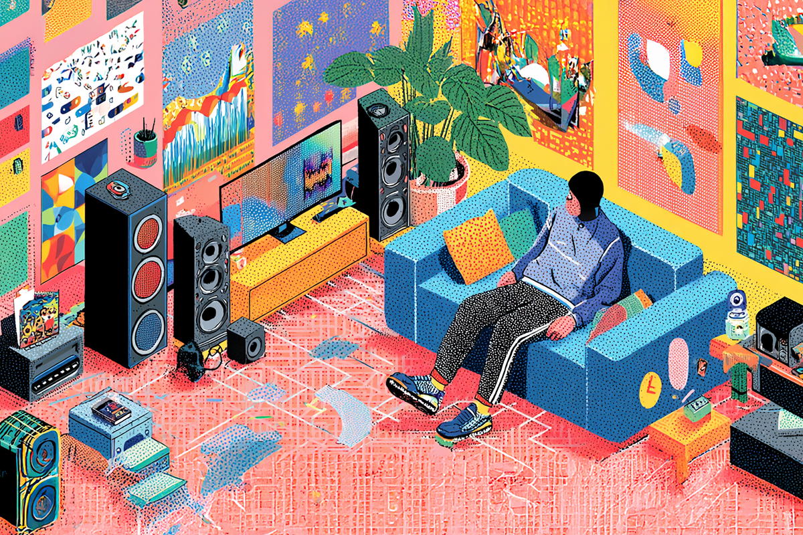

¡Cómo pasa el tiempo! Recordemos la banda sonora del 2016
Un repaso a algunos de los tantos hits que nos acompañaron hace una década
Un repaso a algunos de los tantos hits que nos acompañaron hace una década

Ahora que está tan de moda revivir el 2016, quizás sea buena idea revisar cuáles eran los singles que marcaron ese año, tan nostálgico para muchos.
Es que, considerando que ese fue el año donde nos dejaron artistas como David Bowie o Prince, donde Estados Unidos le daba paso al primer mandato presidencial de Donald Trump, el año en que Pokémon Go nos hizo recorrer kilómetros en las calles con nuestros celulares y Yo Antes de Ti, Deadpool y La La Land se estrenaban en los cines, es obvio que muchos recuerdos estén ligados a lo que escuchábamos.
Así que prepárate que nos vamos por un “memory lane”, revisando algunos de los trabajos musicales inolvidables que nos dejó el 2016.
¿Quién no bailó con esta canción? Debe ser uno de los grandes singles lanzados el 2016, cuando Rihanna había llegado a su peak gracias a ANTI, su último disco antes de lanzarse a un hiatus indefinido (sí, llevamos 10 años sin un álbum de esta reina). Si me dijeras que no conoces esta canción, dudaría de la veracidad de tus palabras: Work dominó las listas, las radios y las plataformas de streaming.
Pasándonos a lo latino, el 2016 fue una época en que cantantes como Bad Bunny, Ozuna y Maluma comenzaron a gestar los cimientos de sus maratónicas carreras fuera de sus países natales, pegando fuerte en el mercado global. En este contexto temporal es que J Balvin, otro de los grandes nombres en la nueva oleada del género urbano, comenzaba a marcar la diferencia. Ginza fue un hitazo, uno que impulsó la expansión a nivel mundial del reggaetón y que, con su magnético sonido, logró posicionarse dentro de las listas más importantes en el 2016.

Otra de las canciones que sonó muchísimo en todas las plataformas. Drake ya había consolidado su carrera, pero gracias a hits como One Dance o Hotline Bling, ambas canciones de su álbum más reconocido, “Views”, terminó por cimentar su camino a ser una leyenda de la industria. A pesar de que ambas canciones superan los mil millones de reproducciones en Spotify, One Dance fue la canción más escuchada en 2016 a nivel global y en esa plataforma ya va por las 4 mil millones de reproducciones. Otra cosa.
Cuando los millenials todavía teníamos un espacio reconocible en la industria musical, y cuando muchos de los himnos musicales nos tocaban directamente la fibra, apareció como canon absoluto Closer de Chainsmokers y Halsey, un pop-electrónico de tomo y lomo que sacudió las listas y nuestros corazones optimistas.
De eso, 10 años, pero la sensación que nos produjo se puede volver a sentir desde el primer acorde: la más pura nostalgia.
Top 5 de canciones más icónicas de la década. Si hay un single que consolidó el 2016 como un año insigne del pop electrónico, fue Sorry de Justin Bieber, cantante que en ese momento también estaba en su apogeo, escapándose del nicho adolescente para volverse realmente mainstream. Siendo honestos, uno de los grandes puntos a destacar de esta canción, fue su vídeo musical: simple, pero llamativo, una fórmula que fusionó perfecto una buena coreografía y colores brillantes sobre un fondo blanco. Un ideal para la recreación, que fue lo que muchos fans hicieron. En YouTube, Sorry superó las 4 mil millones de reproducciones.
El éxito juvenil y adolescente definitivo del 2016. CNCO revivió la popularidad de las boy bands hispanohablantes gracias a Reggaetón Lento, un single que se escuchó en absolutamente todos lados. Esta mezcla de reggaetón con un pop melódico resultó ser la fórmula perfecta para que el grupo lograra salir de su esfera regional para convertirse en un fenómeno internacional. Ah, y otro dato, esta canción también realizó una colaboración con el grupo británico femenino Little Mix, ampliando aún más sus horizontes y cruzando satisfactoriamente estas dos vertientes musicales.

A pesar de que su lanzamiento fue el 2015, su consolidación fue el 2016. Stressed Out de Twenty One Pilots se convirtió en una de las canciones más representativas de 2016 al retratar el cansancio emocional de una generación marcada por la presión de crecer y la nostalgia por la infancia. Con una mezcla de pop alternativo, hip hop y una producción minimalista (todo muy característico de este dúo), el tema conectó profundamente con el público millennial y con los inicios de los Gen Z, transformándose en un himno juvenil. Su éxito global fue tal que fueron nominados a los Grammy por esta canción. Inmensos.
Sabemos que hay muchas canciones que se nos quedan en el tintero, pero este puede ser el buen inicio para una nueva playlist nostálgica. Ahora solo queda esperar qué nos deparará el futuro; lo cierto es que, como ya nos pasó esta vez, no nos daremos ni cuenta de cómo pasarán los próximos diez años.
 Cultura
CulturaSé que suena raro hablar de calor extremo mientras en Chile todos están buscando la parka más gruesa del clóset.
 Cultura
CulturaEl hecho de que estemos entrando al mes de julio no se puede creer. Pero lo que tampoco se puede creer es la cantidad de artistas que han…
 Cultura
CulturaCuando hablamos de trabajos clásicos de la música chilena, siempre se nombran los discos de Violeta Parra, Víctor Jara, Los Jaivas o…